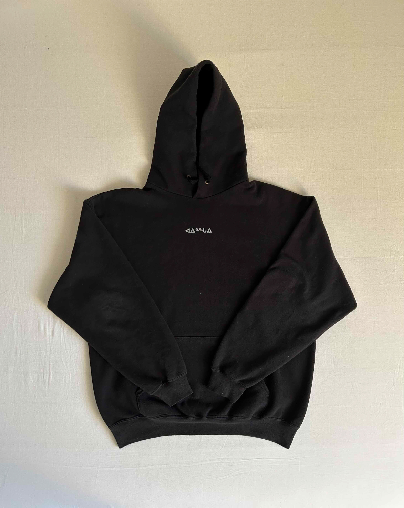
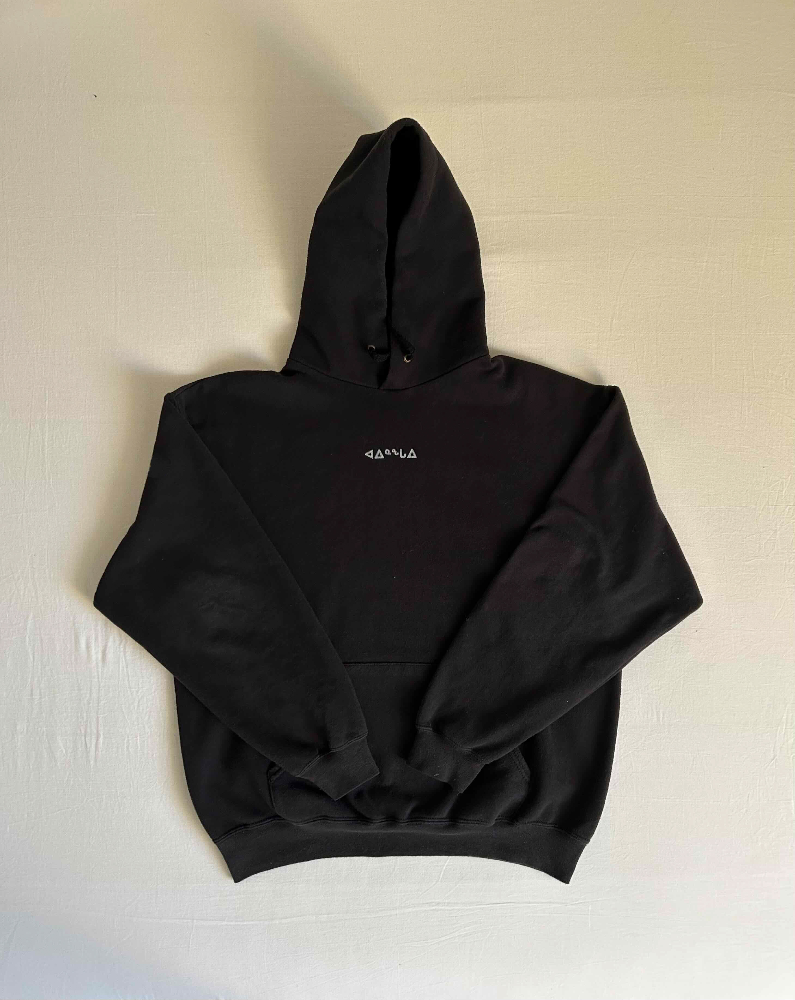

ᑐᙵᓱ , meaning 'welcome' in Inuktitut, is a two-part soundscape which explores the constrast
between traditional and mainsteam clothing through sonic mediums, highlighting the ways in which
our modern economy exploits and neglects that art of fashion in the name of productivity.
ᑐᙵᓱ was performed on [Mushroom Radio] on
the 17th of May at the Royal Academy of Art in The Hague.
Accompanying posters and custom apparrel depict a visual exploration into the style and ancient technique behind the making and wearing of native Inuit garments. (1) Untitled, A2 laserprint. (2) ᑕᑯᓇᓵᕐᓇᑯᓂ (Long time no see), A2 laserprint and silkscreen print hoodie.
Accompanying posters and custom apparrel depict a visual exploration into the style and ancient technique behind the making and wearing of native Inuit garments. (1) Untitled, A2 laserprint. (2) ᑕᑯᓇᓵᕐᓇᑯᓂ (Long time no see), A2 laserprint and silkscreen print hoodie.